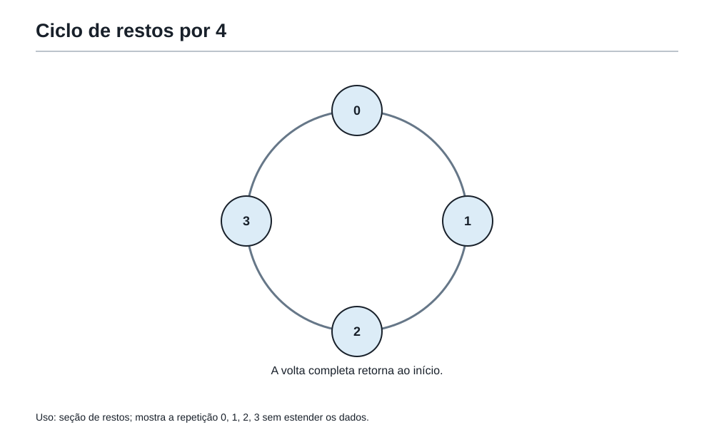
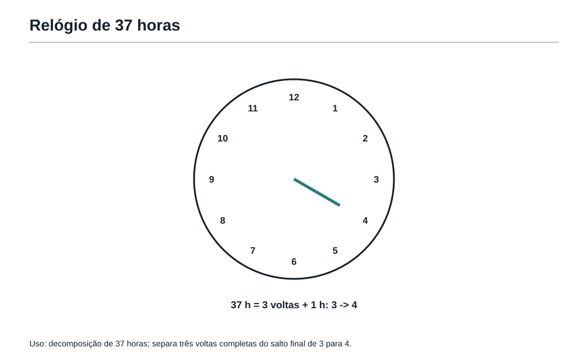
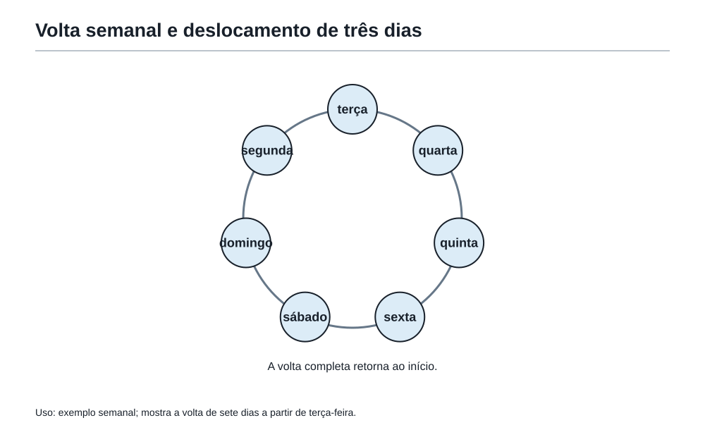

Quando sobra, nasce uma ideia
1. Depois do mundo dos números
Na sala anterior da Academia do Raciocínio, Felipe descobriu que número não é só quantidade.
Número tem estrutura.
O número 24, por exemplo, podia ser visto como:
- 1 grupo de 24;
- 2 grupos de 12;
- 3 grupos de 8;
- 4 grupos de 6;
- 6 grupos de 4;
- 8 grupos de 3;
- 12 grupos de 2;
- 24 grupos de 1.
Cada divisão perfeita revelava uma porta.
Mas o professor da Academia não parou diante das divisões perfeitas. Ele escreveu no quadro:
25 dividido por 4
Felipe pensou rapidamente.
Quatro cabe seis vezes em 25, porque 4 × 6 = 24.
Mas sobra 1.
O professor sorriu.
— E essa sobra? Ela é um erro?
Felipe respondeu:
— Não. Ela está dizendo que a divisão quase encaixou, mas não encaixou completamente.
— Exatamente. Hoje vamos aprender uma das ideias mais importantes da matemática olímpica: quando sobra, nasce uma informação.
A coruja da Academia, empoleirada perto do relógio, completou:
Quem ignora a sobra perde metade do problema.
2. A sobra não é fracasso
Na escola, às vezes a sobra aparece como algo que atrapalha.
Mas em problemas olímpicos, a sobra muitas vezes é a pista principal.
Veja a divisão:
25 = 4 × 6 + 1
Isso quer dizer:
- 25 contém 6 grupos completos de 4;
- depois desses grupos, sobra 1.
A sobra não está fora da matemática. Ela faz parte da descrição do número.
Agora compare:
26 = 4 × 6 + 2
27 = 4 × 6 + 3
28 = 4 × 7 + 0
Quando dividimos por 4, as sobras possíveis são apenas:
0, 1, 2 ou 3.
Não pode sobrar 4, porque se sobrassem 4 unidades, elas formariam mais um grupo completo de 4.
Essa é uma das primeiras ideias importantes da sala dos restos:
Ao dividir por um número, a sobra sempre é menor que ele.
Se dividimos por 7, as sobras possíveis são 0, 1, 2, 3, 4, 5 e 6.
Se dividimos por 10, as sobras possíveis são 0 até 9.
Se dividimos por 2, as sobras possíveis são só 0 e 1.
E é por isso que todo número inteiro é par ou ímpar.
- Resto 0 na divisão por 2: número par.
- Resto 1 na divisão por 2: número ímpar.
A paridade, que parece uma ideia simples, é na verdade a primeira porta dos restos.
3. O nome vem depois
O professor escreveu:
37 = 5 × 7 + 2
Depois perguntou:
— O que essa frase diz sobre 37?
Felipe respondeu:
— Que 37 dividido por 5 dá 7 grupos completos e sobra 2.
— Perfeito. Agora podemos dar nome à ideia.
Quando dizemos que 37 deixa resto 2 na divisão por 5, estamos dizendo que 37 está 2 passos depois de um múltiplo de 5.
Os múltiplos de 5 são:
0, 5, 10, 15, 20, 25, 30, 35, 40...
O 37 fica dois passos depois do 35.
Então a sobra não é uma peça solta. Ela mostra onde o número está em relação à trilha dos múltiplos.
A Academia registrou na parede:
Resto é posição depois da última volta completa.
Essa frase será mais útil do que parece.
4. A trilha dos restos

Felipe caminhou até uma faixa desenhada no chão da sala.
A faixa tinha marcas de 0 a 20. O professor pediu:
— Caminhe pela trilha dos números e observe os restos quando dividimos por 4.
Felipe começou:
| Número | Resto na divisão por 4 |
|---|---|
| 0 | 0 |
| 1 | 1 |
| 2 | 2 |
| 3 | 3 |
| 4 | 0 |
| 5 | 1 |
| 6 | 2 |
| 7 | 3 |
| 8 | 0 |
| 9 | 1 |
| 10 | 2 |
| 11 | 3 |
| 12 | 0 |
A sequência de restos ficou assim:
0, 1, 2, 3, 0, 1, 2, 3, 0, 1, 2, 3...
Felipe percebeu rapidamente:
— Os restos se repetem!
— Sim — disse o professor. — Quando dividimos por 4, os restos andam em ciclos de 4.
A palavra ciclo apareceu pela primeira vez com força.
Um ciclo é uma repetição organizada.
Não é uma repetição bagunçada. É uma volta que retorna ao começo.
Na divisão por 4, o ciclo dos restos é:
0, 1, 2, 3
Depois volta ao 0.
Na divisão por 5, o ciclo é:
0, 1, 2, 3, 4
Depois volta ao 0.
Na divisão por 7, o ciclo é:
0, 1, 2, 3, 4, 5, 6
Depois volta ao 0.
A coruja bateu as asas e disse:
Um ciclo é uma escada circular: você sobe, sobe, sobe... e volta ao começo.
5. O relógio que nunca se perde

O professor apontou para o relógio da Academia.
— O relógio é uma máquina de restos.
Felipe estranhou.
— Como assim?
— Pense no relógio de 12 horas. Se agora são 3 horas, que horas serão daqui a 5 horas?
Felipe contou:
4, 5, 6, 7, 8.
— 8 horas.
— E daqui a 12 horas?
— 3 horas de novo.
— E daqui a 24 horas?
— 3 horas de novo.
— E daqui a 37 horas?
Felipe começou a contar, mas o professor interrompeu:
— Não conte tudo. Procure as voltas completas.
37 horas têm 3 voltas completas de 12 horas:
12 × 3 = 36
Depois de 36 horas, o relógio volta ao mesmo lugar.
Sobra 1 hora.
Então, saindo de 3 horas:
3 + 1 = 4
Daqui a 37 horas serão 4 horas.
A conta escondida foi:
37 deixa resto 1 na divisão por 12.
O relógio ensinou uma ferramenta da Mochila:
Para ciclos grandes, elimine as voltas completas.
Não é preciso carregar 37 passos se 36 deles apenas dão voltas inteiras.
6. O calendário também é um relógio

A sala seguinte tinha um calendário desenhado na parede.
O professor perguntou:
— Se hoje é terça-feira, que dia da semana será daqui a 10 dias?
Felipe contou:
Quarta, quinta, sexta, sábado, domingo, segunda, terça, quarta, quinta, sexta.
— Sexta-feira.
— Certo. Agora faça sem contar todos os dias.
A semana tem 7 dias.
Em 10 dias, há uma volta completa de 7 dias e sobram 3 dias.
10 = 7 × 1 + 3
Então, a partir de terça-feira, avançamos só 3 dias:
- quarta;
- quinta;
- sexta.
O mesmo resultado.
Agora o professor mudou a pergunta:
— Se o dia 1 de um mês foi terça-feira, que dia da semana foi o dia 100 desse mesmo calendário imaginário?
Felipe quase começou a contar 100 dias.
Mas parou.
— Do dia 1 até o dia 100 passam 99 avanços.
— Muito bem. Essa é a primeira armadilha: do dia 1 ao dia 100 não são 100 pulos. São 99.
Agora bastava dividir 99 por 7:
99 = 7 × 14 + 1
Sobra 1.
Então o dia 100 foi um dia depois de terça-feira:
quarta-feira.
A Academia registrou outra frase:
Em problemas de calendário, cuidado com o ponto de partida.
Nem sempre o número escrito no enunciado é o número de passos.
7. A informação essencial
Nem todo problema de restos parece falar de restos.
O professor escreveu:
Uma lâmpada pisca a cada 6 segundos. Se ela pisca agora, em que estado estará depois de 125 segundos?
Felipe começou a imaginar a lâmpada acendendo e apagando.
O professor explicou:
— Antes de pensar no objeto, descubra o ciclo.
Se a lâmpada repete seu comportamento a cada 6 segundos, então 6 segundos formam uma volta completa.
Agora calculamos:
125 = 6 × 20 + 5
Depois de 120 segundos, a lâmpada está no mesmo ponto do ciclo em que começou.
Depois sobram 5 segundos.
O problema real não é sobre 125.
É sobre 5.
Essa é uma ideia poderosa:
Em ciclos, o resto costuma ser a informação essencial.
Se uma sequência se repete a cada 4 termos, o termo de posição 1000 depende do resto de 1000 na divisão por 4.
Se uma cor se repete a cada 5 passos, o passo 203 depende do resto de 203 na divisão por 5.
Se uma máquina volta ao estado inicial a cada 9 movimentos, o movimento 100 depende do resto de 100 na divisão por 9.
O número grande assusta.
O resto organiza.
8. Padrões que andam em círculo
O professor colocou uma faixa de cores no quadro:
azul, verde, amarelo, azul, verde, amarelo, azul, verde, amarelo...
— Qual será a cor da posição 20?
Felipe viu que o ciclo tinha 3 cores.
Mas apareceu uma nova dúvida:
Se a posição 1 é azul, como usar o resto?
Ele fez uma pequena tabela:
| Posição | Cor |
|---|---|
| 1 | azul |
| 2 | verde |
| 3 | amarelo |
| 4 | azul |
| 5 | verde |
| 6 | amarelo |
As posições que deixam resto 1 na divisão por 3 são azul:
1, 4, 7, 10...
As posições que deixam resto 2 são verde:
2, 5, 8, 11...
As posições que deixam resto 0 são amarelo:
3, 6, 9, 12...
Agora:
20 = 3 × 6 + 2
Resto 2.
Logo, a cor da posição 20 é verde.
O professor apontou o cuidado principal:
— Quando o ciclo começa na posição 1, o resto 0 costuma corresponder ao último elemento do ciclo.
Isso evita muitos erros.
A Academia anotou:
Resto 0 não significa “nada”. Em ciclos de posições, muitas vezes significa “fim da volta”.
9. Quando o último algarismo conta a história
Na sala dos números, Felipe tinha aprendido que alguns sinais revelam muito.
Agora o professor escreveu uma pergunta:
Qual é o último algarismo de 7²⁰²⁶?
Felipe arregalou os olhos.
— Não dá para calcular isso inteiro.
— Ainda bem — disse o professor. — Problema olímpico bom não quer que você faça força sem pensar.
Vamos observar os últimos algarismos das potências de 7:
7¹ termina em 7
7² = 49 termina em 9
7³ = 343 termina em 3
7⁴ = 2401 termina em 1
7⁵ termina em 7 de novo
O ciclo dos últimos algarismos é:
7, 9, 3, 1
Esse ciclo tem comprimento 4.
Agora basta observar a posição 2026 dentro desse ciclo.
2026 = 4 × 506 + 2
Resto 2.
A segunda posição do ciclo é 9.
Logo, o último algarismo de 7²⁰²⁶ é:
9
Felipe percebeu a ideia:
— A potência enorme virou uma pergunta de ciclo.
— Exatamente. O problema parecia pedir cálculo gigante, mas pedia observação de restos.
A coruja completou:
Quando o número é grande demais, talvez ele esteja pedindo um ciclo, não uma conta.
10. Prever sem calcular tudo
O professor propôs outro desafio:
Uma sequência começa assim: 2, 5, 8, 11, 14, 17... Qual é o resto do 100º termo na divisão por 3?
Felipe percebeu que a sequência aumenta de 3 em 3.
Todos os termos deixam o mesmo resto quando divididos por 3.
Como o primeiro termo é 2, todos os termos deixam resto 2 na divisão por 3.
Não foi preciso encontrar o 100º termo.
A resposta é:
resto 2.
O professor explicou:
— Quando acrescentamos 3 a um número, o resto na divisão por 3 não muda.
Exemplos:
2 deixa resto 2
5 deixa resto 2
8 deixa resto 2
11 deixa resto 2
Somar uma volta completa não muda a posição no ciclo.
Essa ideia aparecerá muitas vezes em problemas de Olimpíada.
Se somamos 7 em 7, o dia da semana não muda.
Se somamos 10 em 10, o último algarismo não muda.
Se somamos 4 em 4, o resto por 4 não muda.
A volta completa muda o tamanho do número, mas não muda sua posição no ciclo.
11. Quando a sobra prova impossibilidade
Às vezes o resto não serve para encontrar uma resposta.
Serve para mostrar que uma resposta não pode existir.
O professor escreveu:
É possível um número deixar resto 5 na divisão por 4?
Felipe respondeu sem hesitar:
— Não. Na divisão por 4, os restos possíveis são 0, 1, 2 e 3.
— Ótimo. Agora um pouco mais difícil.
É possível dividir 29 medalhas em grupos de 6 e sobrarem exatamente 8 medalhas?
Felipe pensou.
Se sobrassem 8 medalhas, daria para formar mais um grupo de 6 e ainda sobrariam 2.
Então a sobra 8 não é uma sobra final.
Logo, não é possível.
A Academia registrou:
Uma sobra grande demais denuncia que a divisão ainda não terminou.
Agora o professor trouxe um problema com aparência diferente:
Um número é par. É possível que ele deixe resto 1 na divisão por 2?
Não.
Ser par é exatamente deixar resto 0 na divisão por 2.
E um número ímpar deixa resto 1.
Restos ajudam a separar possibilidades.
Em muitos problemas, a pergunta escondida não é “quanto vale?”, mas:
isso é possível?
E restos são excelentes para responder impossibilidades.
12. O efeito dominó
O professor colocou 30 fichas em fila.
Depois pintou as fichas seguindo um ciclo:
vermelho, vermelho, azul, vermelho, vermelho, azul...
— Qual é a cor da ficha 28?
O ciclo tem 3 posições:
- vermelho;
- vermelho;
- azul.
Agora:
28 = 3 × 9 + 1
Resto 1.
Logo, a ficha 28 é vermelha.
Mas o professor mudou o desafio:
— E se eu empurrar uma ficha e cada ficha empurrar a próxima seguindo esse padrão de cores, quando aparecerá a próxima azul depois da ficha 28?
Felipe viu que as fichas azuis aparecem nas posições múltiplas de 3:
3, 6, 9, 12, ..., 27, 30
A ficha 28 é vermelha.
A próxima azul é a ficha 30.
O professor explicou:
— O ciclo não serve apenas para descobrir uma posição. Ele também ajuda a prever o que vem antes e depois.
Isso é o efeito dominó dos restos.
Quando sabemos a posição de um número no ciclo, sabemos também como ele se moverá ao somar 1, 2, 3 ou uma volta completa.
Se um número deixa resto 1 na divisão por 3:
- o próximo deixa resto 2;
- o seguinte deixa resto 0;
- o próximo volta a resto 1.
Restos não são fotografias isoladas.
São movimento.
13. Duas trilhas ao mesmo tempo
Na última parte da sala, havia duas luzes.
Uma luz azul piscava a cada 4 segundos.
Uma luz dourada piscava a cada 6 segundos.
As duas piscavam juntas no instante inicial.
O professor perguntou:
— Quando elas piscarão juntas novamente?
Felipe listou as piscadas da luz azul:
4, 8, 12, 16, 20, 24...
Depois listou as piscadas da luz dourada:
6, 12, 18, 24...
O primeiro encontro depois do início é:
12 segundos.
O professor não usou ainda a palavra formal.
Mas Felipe percebeu a ideia:
— Estamos procurando o primeiro número que aparece nas duas trilhas.
— Exatamente.
A luz azul tem ciclo de 4.
A luz dourada tem ciclo de 6.
O reencontro acontece quando as duas completam um número inteiro de voltas ao mesmo tempo.
A coruja girou a cabeça:
Um ciclo sozinho pede restos. Dois ciclos juntos pedem encontros.
Essa frase abre a porta do próximo capítulo.
14. A ponte para MDC e MMC
O professor desenhou duas portas na parede.
Na primeira, escreveu:
dividir sem sobrar
Na segunda, escreveu:
reencontrar ciclos
Depois perguntou:
— Essas portas são iguais?
Felipe pensou.
Dividir sem sobrar lembra divisores.
Reencontrar ciclos lembra múltiplos.
— Não são iguais — respondeu.
— Muito bem. O próximo capítulo vai estudar essas duas portas com mais profundidade.
Quando um problema pergunta por grupos iguais, cortes, caixas, kits ou pedaços sem sobra, ele costuma estar olhando para divisores comuns.
Quando um problema pergunta por sinos, luzes, horários, passos, calendários ou eventos que voltam a acontecer juntos, ele costuma estar olhando para múltiplos comuns.
O capítulo de hoje não precisa formalizar tudo isso.
Ele só precisa deixar uma pergunta acesa:
Quando dois ciclos se encontram, existe um jeito inteligente de descobrir o primeiro encontro?
Essa pergunta será respondida na próxima sala.
OBMEP15. Problema em estilo OBMEP — O treino das lanternas
Na Academia do Raciocínio, uma lanterna azul pisca a cada 5 segundos e uma lanterna verde pisca a cada 8 segundos. As duas piscam juntas no instante inicial.
Pergunta: depois de quantos segundos elas piscarão juntas novamente pela primeira vez?
Primeira jogada
O problema fala de dois ciclos.
A lanterna azul repete a cada 5 segundos.
A lanterna verde repete a cada 8 segundos.
Queremos o primeiro reencontro.
Ver solução
Solução
Piscadas da lanterna azul:
5, 10, 15, 20, 25, 30, 35, 40...
Piscadas da lanterna verde:
8, 16, 24, 32, 40...
O primeiro número que aparece nas duas listas é 40.
Logo, elas piscam juntas novamente depois de:
40 segundos.
O que esse problema ensina
Não era um problema de somar 5 + 8.
Também não era um problema de escolher a lanterna mais rápida.
Era um problema de reencontro de ciclos.
OBMEP16. Problema em estilo OBMEP — A sequência das pulseiras
As pulseiras da Academia seguem este padrão de cores:
dourada, prata, bronze, bronze, dourada, prata, bronze, bronze...
O padrão se repete sempre nessa ordem.
Pergunta: qual é a cor da 2026ª pulseira?
Primeira jogada
O ciclo tem 4 posições:
- dourada;
- prata;
- bronze;
- bronze.
Precisamos descobrir a posição 2026 dentro de um ciclo de 4.
Ver solução
Solução
Dividimos 2026 por 4:
2026 = 4 × 506 + 2
O resto é 2.
A posição 2 do ciclo é prata.
Logo, a 2026ª pulseira é:
prata.
Cuidado importante
Se o resto fosse 0, a resposta seria a 4ª posição do ciclo, isto é, bronze.
Resto 0 não significa “sem cor”.
Significa fim da volta.
OBMEP17. Problema em estilo OBMEP — O número da sala secreta
Um número entre 30 e 60, inclusive, deixa resto 2 quando dividido por 7.
Além disso, esse número é par.
Pergunta: qual é o menor número que pode ser o número da sala secreta?
Primeira jogada
O número precisa estar 2 passos depois de um múltiplo de 7.
Vamos listar os números entre 30 e 60 com resto 2 na divisão por 7.
Ver solução
Solução
Múltiplos de 7 próximos:
28, 35, 42, 49, 56
Dois passos depois deles:
30, 37, 44, 51, 58
Agora aplicamos a segunda condição: o número deve ser par.
Entre esses números, os pares são:
30, 44, 58
O menor é:
30
O que esse problema ensina
A primeira condição criou uma trilha.
A segunda condição filtrou a trilha.
Em problemas olímpicos, muitas respostas aparecem assim: primeiro encontramos candidatos; depois eliminamos os que não servem.
OBMEP18. Problema em estilo OBMEP — A porta que não abre
Uma porta da Academia só abre com um número que deixa resto 4 na divisão por 6 e resto 1 na divisão por 2.
Pergunta: existe algum número que abra essa porta?
Primeira jogada
A condição “resto 4 na divisão por 6” diz que o número tem a forma:
6 × algum número + 4
Alguns exemplos são:
4, 10, 16, 22, 28, 34...
Todos esses números são pares.
Ver solução
Solução
Se um número deixa resto 4 na divisão por 6, ele é 4 a mais que um múltiplo de 6.
Todo múltiplo de 6 é par.
Somar 4 mantém o número par.
Então todo número que deixa resto 4 na divisão por 6 é par.
Mas um número que deixa resto 1 na divisão por 2 é ímpar.
Um número não pode ser par e ímpar ao mesmo tempo.
Logo:
não existe número que abra essa porta.
O que esse problema ensina
Restos podem provar impossibilidade.
Às vezes a resposta correta não é um número, mas uma justificativa de que nenhum número serve.
Oficina19. Oficina Olímpica 2 — Restos e ciclos
Esta oficina não é uma lista para correr.
Ela é um treino de olhar.
Antes de ler cada solução, tente identificar:
- qual é o ciclo;
- qual é a volta completa;
- qual é o resto;
- se a pergunta pede posição, possibilidade ou reencontro.
Use o caderno se quiser.
Desafio 1 — O relógio da torre
Agora são 9 horas. Que hora marcará o relógio daqui a 50 horas?
Solução comentada
O relógio de 12 horas repete a cada 12 horas.
50 = 12 × 4 + 2
Depois de 48 horas, o relógio volta ao mesmo horário.
Sobram 2 horas.
Saindo de 9 horas:
9 + 2 = 11
Resposta:
11 horas.
Desafio 2 — As fitas coloridas
Uma sequência de fitas segue o padrão:
azul, azul, verde, amarelo, azul, azul, verde, amarelo...
Qual é a cor da fita de posição 99?
Solução comentada
O ciclo tem 4 posições:
- azul;
- azul;
- verde;
- amarelo.
Agora:
99 = 4 × 24 + 3
Resto 3.
A posição 3 do ciclo é verde.
Resposta:
verde.
Desafio 3 — O último algarismo
Qual é o último algarismo de 3¹⁰⁰?
Solução comentada
Vamos observar os últimos algarismos das potências de 3:
3¹ termina em 3
3² termina em 9
3³ termina em 7
3⁴ termina em 1
3⁵ termina em 3 de novo
O ciclo é:
3, 9, 7, 1
Comprimento 4.
Agora:
100 = 4 × 25 + 0
Resto 0 significa a última posição do ciclo.
A última posição é 1.
Resposta:
1.
Desafio 4 — O calendário da Academia
O dia 1 de certo mês foi sábado. Que dia da semana será o dia 31?
Solução comentada
Do dia 1 ao dia 31 passam 30 avanços.
A semana tem ciclo de 7 dias.
30 = 7 × 4 + 2
Avançamos 2 dias a partir de sábado:
- domingo;
- segunda.
Resposta:
segunda-feira.
Desafio 5 — O número escondido
Um número entre 1 e 50 deixa resto 3 na divisão por 5 e é múltiplo de 4.
Qual é o menor número possível?
Solução comentada
Números que deixam resto 3 na divisão por 5:
3, 8, 13, 18, 23, 28, 33, 38, 43, 48
Agora procuramos os múltiplos de 4 nessa lista:
8, 28, 48
O menor é:
8.
Desafio 6 — O reencontro dos passos
Dois robôs saem juntos do mesmo ponto em uma pista circular. Um completa uma volta a cada 6 minutos. O outro completa uma volta a cada 10 minutos.
Depois de quantos minutos eles estarão novamente juntos no ponto de partida pela primeira vez?
Solução comentada
O primeiro robô volta ao ponto de partida nos tempos:
6, 12, 18, 24, 30...
O segundo volta ao ponto de partida nos tempos:
10, 20, 30...
O primeiro reencontro no ponto de partida acontece em:
30 minutos.
Esse desafio prepara diretamente a próxima sala da Academia.
20. As ferramentas da Mochila nesta sala
Nesta sala, Felipe não ganhou apenas contas novas.
Ganhou maneiras de enxergar ciclos.
Ferramentas organizadas:
- Ver a sobra como informação, não como erro.
- Lembrar que o resto sempre é menor que o divisor.
- Reconhecer ciclos em relógios, calendários, cores, potências e sequências.
- Eliminar voltas completas antes de calcular.
- Identificar o resto como a informação essencial.
- Cuidar do ponto de partida em problemas de posição.
- Entender que resto 0 pode indicar o fim da volta.
- Usar restos para prever sem calcular tudo.
- Usar restos para provar impossibilidades.
- Procurar reencontros quando dois ciclos aparecem juntos.
A Mochila ficou mais leve porque Felipe aprendeu uma coisa importante:
números grandes não precisam ser carregados inteiros quando existe um ciclo.
21. Figuras aplicadas no ponto de uso
As três especificações desta sala aparecem nas seções da trilha dos restos, do relógio e do calendário. Elas sustentam ciclos e voltas completas e não formam uma galeria final.
22. A frase da Academia
A sobra não é o fim da conta. É o começo de uma pista.
23. Pergunta para amanhã
O professor fechou a sala dos restos.
Mas antes de sair, apontou para as duas luzes que piscavam em ritmos diferentes.
— Hoje você aprendeu a olhar ciclos. Amanhã vamos perguntar algo mais forte: quando dois ciclos se encontram, como encontrar o primeiro reencontro sem listar tudo?
Felipe guardou a pergunta na Mochila.
Quando dois ciclos ou dois grupos precisam encaixar ao mesmo tempo, que ferramenta encontra o encontro certo?
Resposta operacional para a próxima sala:
O Capítulo 4 — Quando os divisores se encontram — deve ser harmonizado como ponte natural entre divisores, múltiplos, restos, MDC e MMC.